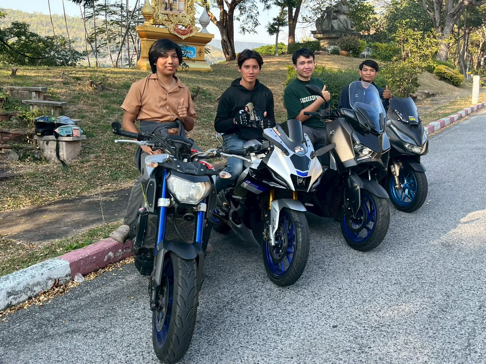
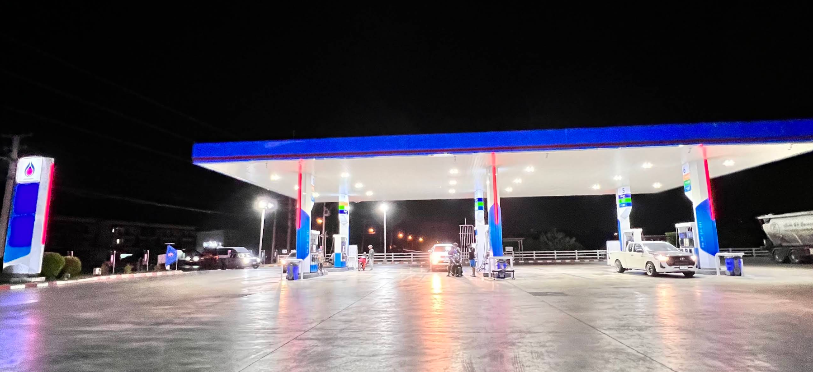
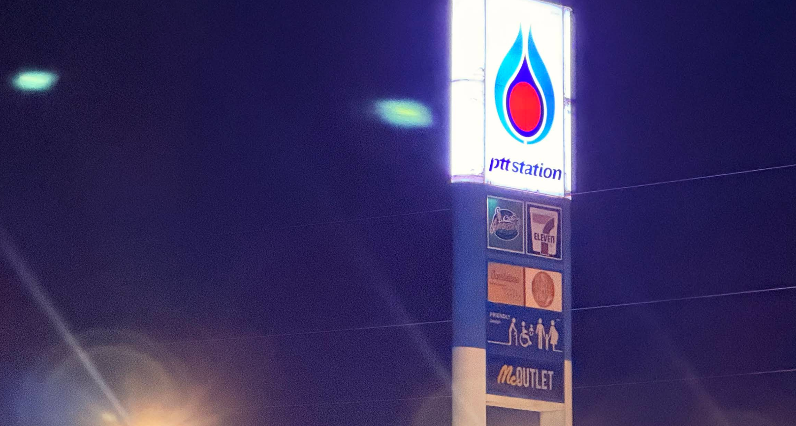
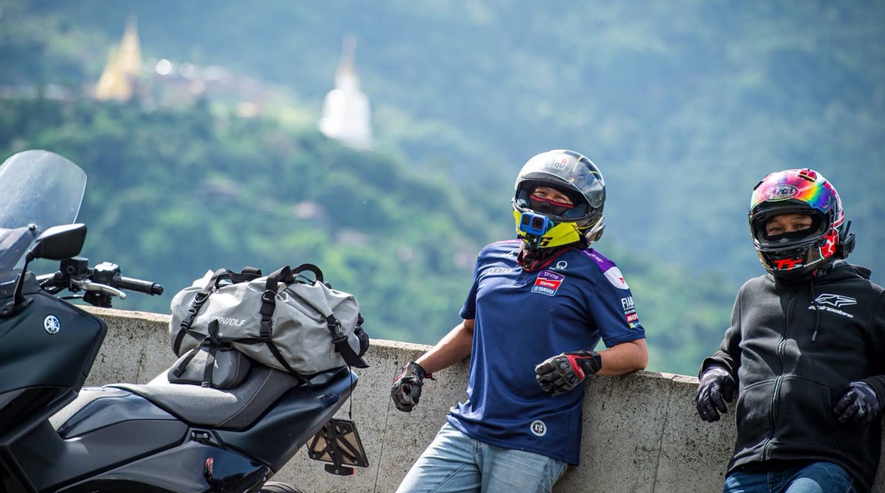
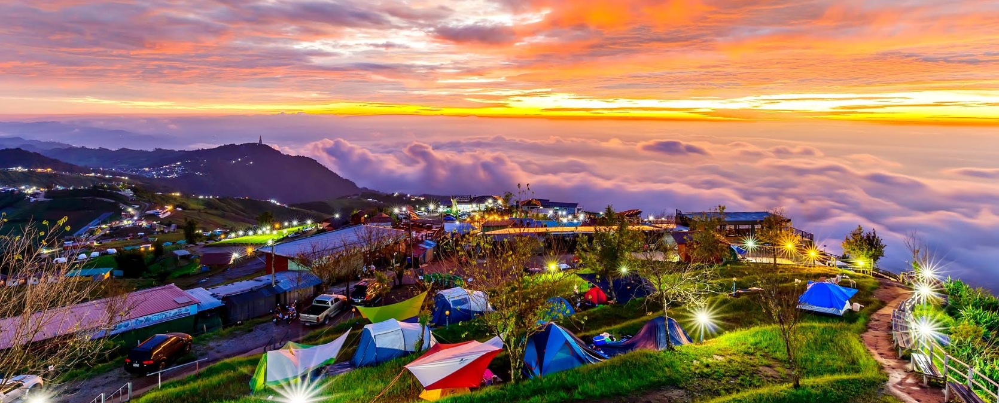

สมาชิกผู้ร่วมทริป & กองหนุน
ทีมบุกเบิก
ยานพาหนะร่วมขบวน
รวม 4 คันเดินทางอิสระตามความเหมาะสม บรรทุกเต็นท์และอุปกรณ์แคมป์ปิ้งไปสมทบที่ปลายทาง
สภาพอากาศยอดดอยภูทับเบิก
ความสูง 1,768 ม. จากระดับน้ำทะเล
เตรียมเสื้อกันลมและเสื้อกันหนาวหนาๆ ลมแรงช่วงค่ำและเช้าตรู่
แผนการเดินทาง & จุดแวะพัก
ติ๊กเมื่อถึงจุดหมาย1. สำนักงานเทศบาลตำบลลำลูกกา
จุดสตาร์ทแรกของทีมลำลูกกา
วอร์มเครื่องยนต์ เช็กลมยางและสัมภาระรอบคัน ออกเดินทางมุ่งหน้าคลองห้าเพื่อรวมพล
2. รพ.สต. คลองห้า (จุดรวมพล 2 ล้อ)
จุดรวมพลรถมอเตอร์ไซค์ 3 คัน ล้อหมุนพร้อมกัน
- เช็กสัญญาณบลูทูธหมวกกันน็อก / เปิดระบบนำทาง
- จัดรูปขบวน: บอส หัวขบวน, เป้ (FORZA 2021) & ป็อบ&แฟน (XMAX 2019) สลับฟันปลา
- * รถกระบะบรรทุกสัมภาระส่วนใหญ่แล้ว และจะออกตามไปทีหลัง ไม่ต้องรอ
- เริ่มยิงยาวเข้าสู่ ทล.21 (ถนนสระบุรี-หล่มสัก)
3. ปั๊ม ปตท. แยกพัฒนานิคม (ขาออก)
จุดพักรถรอบแรก พักเครื่องยนต์ & ยืดเส้นยืดสาย

เติมน้ำมันรอบที่ 1: รถ XMAX / FORZA เติมให้เต็มถัง
พักจิบกาแฟ Cafe Amazon ยามเช้าตรู่ รอรับแสงแรกบนถนน
4. ปตท. พัฒนพล บึงสามพัน (เพชรบูรณ์)
ทานไก่ย่างวิเชียรบุรี & พักเครื่องยนต์

เติมพลังมื้อเช้า: ไก่ย่างวิเชียรบุรี ส้มตำ ข้าวเหนียวร้อนๆ
ตรวจเช็กสภาพ: เช็กลมยาง เติมน้ำมันรอบที่ 2 ก่อนเริ่มไต่เขา
อัปเดตทีมกระบะ: โทรเช็กพิกัดทีมกระบะที่กำลังตามมา
5. วัดพระธาตุผาซ่อนแก้ว เขาค้อ
ไหว้พระ ถ่ายรูปจุดชมวิวพาโนรามา พักคลายเมื่อย

ถ่ายรูปกลุ่มคู่กับมอเตอร์ไซค์ริมผา มองเห็นพระพุทธเจ้า 5 พระองค์สีขาว
พักจิบกาแฟชมวิว 360 องศา เตรียมแรงก่อนขึ้นโค้งพับผ้าสู่ยอดภูทับเบิก
6. เดอะเวิลด์ & ม่อนทับเบิก (จุดกางเต็นท์)
จุดหมายปลายทางยอดดอยภูทับเบิก สัมผัสไอหมอก

- เช็กอินเข้าที่พัก / จองพื้นที่กางเต็นท์รับลมหนาว
- นัดพบทีมกระบะ: รถกระบะมาสมทบ ขนสัมภาระหนัก เต็นท์หลังคา อุปกรณ์แคมป์ปิ้งลงที่พัก
- พักผ่อนชมทะเลหมอกยามบ่าย ถ่ายรูปวิวแปลงกะหล่ำปลีสุดสายตา
- เตรียมสั่งหมูกระทะร้อนๆ ปะทะลมหนาวยามค่ำคืน 🥓🍲⛺
ผังขบวน & เทคนิคขี่ขึ้น-ลงภูทับเบิก
ห้ามปล่อยไหลฟรีเด็ดขาด! หากความเร็วตกจนคลัตช์หลุด (รถไหลเหมือนเกียร์ว่าง) ให้แตะคันเร่งเบาๆ นิดหนึ่งเพื่อให้คลัตช์จับและมี Engine Brake ช่วยฉุดความเร็ว
เบรกหนักก่อนเข้าโค้งในทางตรง ไม่กำเบรกแช่ยาวตลอดทางชัน (สลับใช้เบรกหน้า-หลัง หรือปล่อยเป็นช่วงๆ เพื่อลดความร้อนสะสม ป้องกันน้ำมันเบรกเดือด)